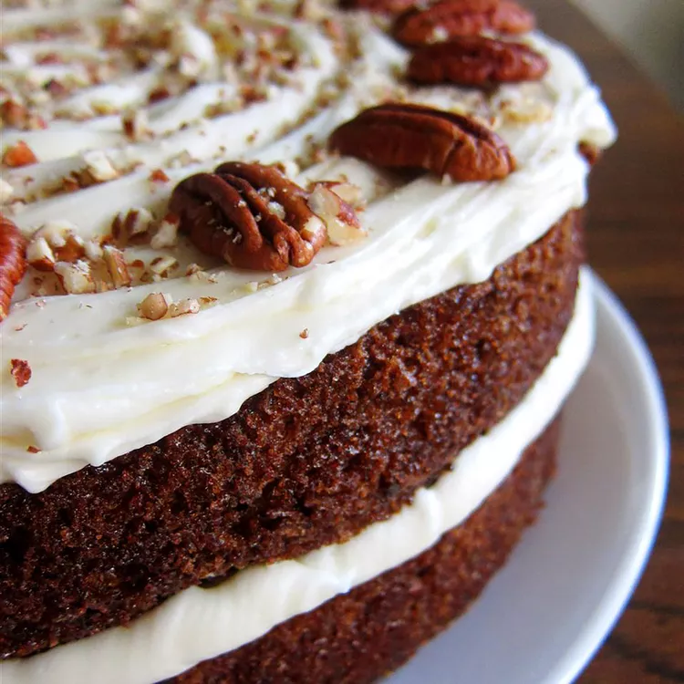

Our top-rated carrot cake recipe is moist, light, fluffy, and topped with a rich cream cheese frosting. What's not to love?

This carrot cake recipe with a homemade cream cheese frosting is my favorite, and I have tried many carrot cakes! It's moist, easy to make with grated carrots, and so delicious!
These are the ingredients you'll need to make your new go-to carrot cake recipe:
Here's a very brief overview of what you can expect when you make homemade carrot cake: